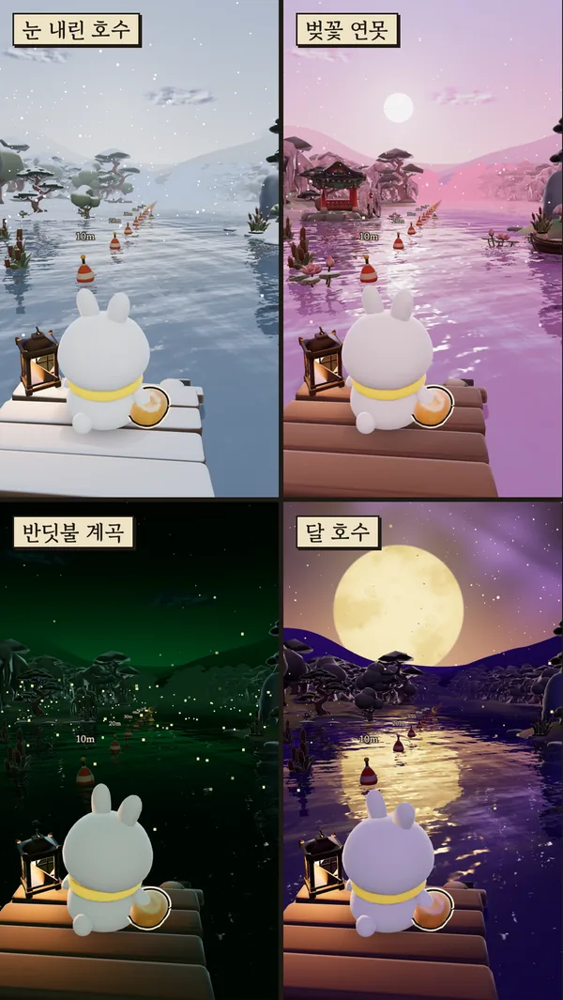

ぽんぽん水切り
통통 물수제비 · うさぎの水切り
月夜の湖で、ぽっちゃりしたうさぎが水切りをするゲームです。1回が数秒で終わるので、ちょっとずつ遊ぶのにちょうどいいです。
石もぽんぽんはねるし、うさぎのおなかもぽんぽんなので、名前が「ぽんぽん水切り」です（笑）
- 画面を上にスワイプすると投げます。石が水にふれるときに合わせてタップすると、もう一回はねます
- 投げ方は4つの中から、やりやすいものを選べます
- 場所は8か所で、どこもちがいます。夕焼けの小川もあれば、雪のふる湖もあります
- 石は27種です。水辺でひろうか、コインで買います。月壺（タルハンアリ）みたいな石もあります
- うさぎにマフラーやカッ（韓国の笠）をつけてあげられます
- 毎日スタンプとミッションがあって、実績は30個です
- 韓国語、日本語、中国語（繁体字）、英語で遊べます
- ガチャは入れていません。広告はボタンを押したときだけ出ます



いまGoogle Playでクローズドテスト中です。正式に出たら、ここにダウンロード先をのせます。